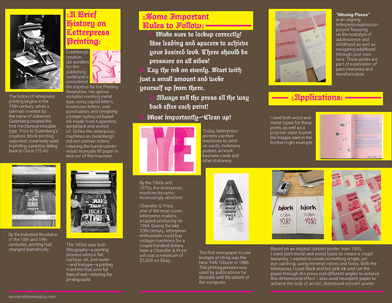
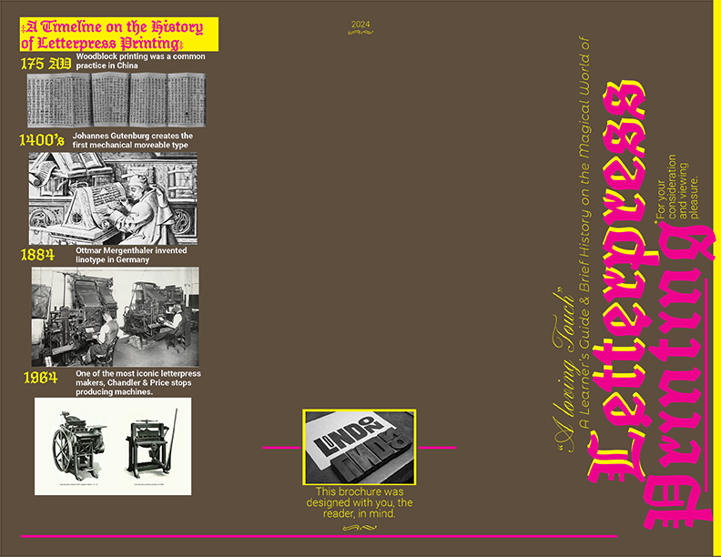
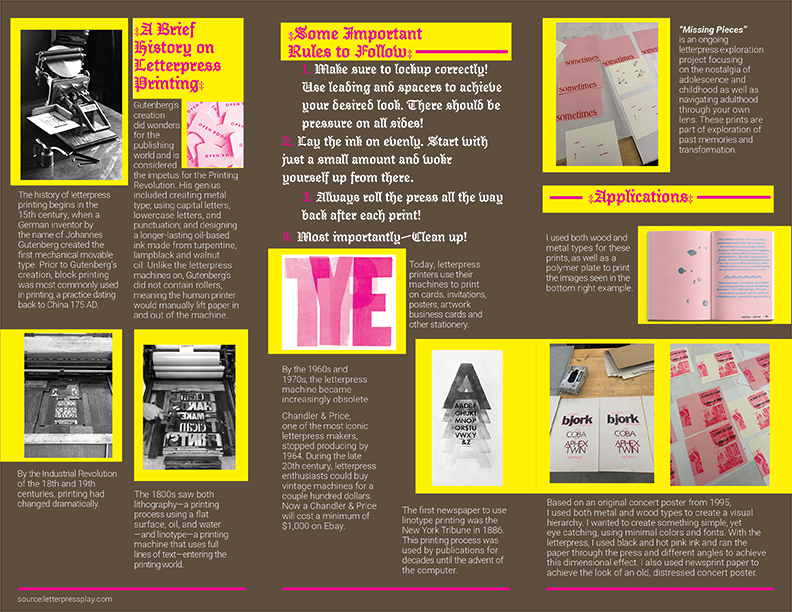
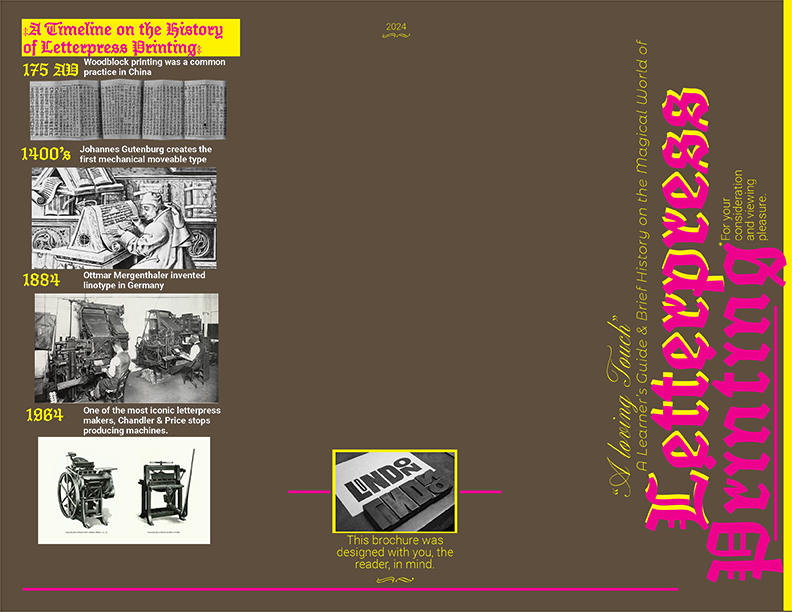

three panel brochure
Based on an original concert poster from 1995, I used both metal and wood types to create a visual hierarchy. I wanted to create something simple, yet eye catching, using minimal colors and fonts. With the letterpress, I used black and hot pink ink and ran the paper through the press and different angles to achieve this dimensional effect. I also used newsprint paper to achieve the look of an old, distressed concert poster.